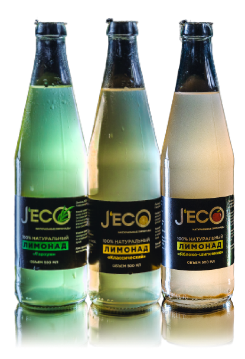

О НАС
КОМПАНИЯ JECO РАДА ПРЕДЛОЖИТЬ ВАШЕМУ
ВНИМАНИЮ НОВЫЙ УНИКАЛЬНЫЙ ПРОДУКТ, АНАЛОГОВ
КОТОРОГО НЕТ НА РОССИЙСКОМ
И МИРОВОМ РЫНКЕ.
НАША ЛИНЕЙКА ЛИМОНАДОВ ЭТО ТОТ САМЫЙ БАЛАНС
МЕЖДУ ВКУСОМ И ПОЛЬЗОЙ, КОТОРЫЙ ВЫ ТАК ДОЛГО
ИСКАЛИ НА ПРИЛАВКАХ!
КАЖДЫЙ ВКУС РАЗРАБОТАН ИЗ 100% НАТУРАЛЬНЫХ
КОМПОНЕНТОВ ЯГОД, ТРАВ И ФРУКТОВ БЕЗ ДОБАВЛЕНИЯ
КОНСЕРВАНТОВ И ГМО.